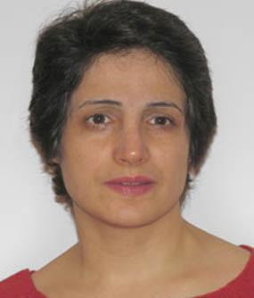

|
|
|
Browsing
Contact Us |
Campaigners |
Face to Face |
Tribune |
Interview |
News |
On the Web |
One Million |
Report
Farsi | Français | German | Italian | Spanish | العربية Also in this section
|
 No Crimes But Punishment-The Case of Nasrin Sotoudeh, Iran’s Human Rights LawyerBy: Elahe Amani Sunday 7 November 2010 View online : Iran Women Solidarity Nasrin Soutoudeh, one of Iran’s most prominent human rights and women’s rights activist went on a hunger strike for the second time on October 31st to protest her unlawful detention and ill treatment in Iran’s Evin Prison. Nasrin Soutoudeh has been in detention since September 4th and denied visit with her lawyer since her arrest. Last week for the first time her two children, three and eleven years old visited her in prison. The children left Evin prison with a broken heart. They found their mother in poor heath and so frail that she could not even hug them. Nasrin Sotoudeh is charged with “acting against national security,” “congregation and collusion with intent to disrupt national security,” and “cooperation with the Center for Human Rights Defenders.” She described the charges against her as “absurd” in an interview with the International Campaign for Human Rights in early September. Four months prior to her arrest, the authorities had warned her in a phone call that if she does not withdraw from Shirin Ebadi’s defense, she would ” get into trouble.” Nasrin’s trial is set for November 15th but with a dry hunger strike from October 31st, she may not live to see her trial. Nasrin is a fine human being, a devoted women’s rights activists and a dedicated lawyer to the cause of justice. She is a member of the Campaign for One Million Signature and the Defenders Human Rights Center. Her professional life is dedicated to the cause of civil and political rights in Iran. She defended Nobel Laureate Shirin Ebadi and has contributed to the legal literature of issues such as death penalty for Juvenile offenders and women’s human rights. In a society where human rights standards are violated, the work of human rights lawyers can be a dangerous proposition. In a society that even the fragile and flawed “civil law” is not being honored by the state, that the work of human rights lawyers is constrained and the safety of their families and loved ones is greatly endangered, a society that the pressure on human rights defenders ranges from death threats, repealing their accreditation, arrest and detention of them and their family, human rights lawyer like Nasrin Sotoudeh are brave souls standing firm against these injustices. Nasrin Sotoudeh deserves recognition and awards for her dedication to protect the civil rights and human rights of those in detention. Nasrin Sotoudeh represents the conscious of a nation for justice and the resilient soul of Iranian women defending rights and dignity for all. Nasrin defended numerous cases of human rights activist including Shirin Ebadi. She also represented a number of cases for the activists of Campaign for One Million Signatures in Iran. Nasrin’s relentless efforts in human rights education focused on the death penalty sentence for juvenile offenders. Iran, is one of the few countries still practicing this atrocious practice. On October 8th, 2010 Jo Becker, children’s rights advocacy director at Human Rights Watch said "Countries around the world have banned this barbaric punishment for children," and "Iran, Saudi Arabia, and Sudan should seize the opportunity to end this practice around the world once and for all." “In 2009, Iran executed at least five adolescent offenders. More than 100 juvenile offenders remain under the death sentence. The Iranian Judiciary continues to harass, prosecute, and detain human rights lawyers critical of the government’s execution of juvenile offenders. “Nasrin advocates for banning execution of juvenile offenders and in an article published at the Feminist School website wrote “..there is one fundamental question which is, would the new generation of the children where the law punishes them as adults ever part take in solidarity for other children’s rights in the future?” The International Campaign for Human Rights in Iran calls on global rights community and the United Nations to demand “The United Nations High Commissioner for Human Rights, Navi Pillay, should immediately intervene with Iranian authorities to ensure the physical well being of detained human rights lawyer Nasrin Sotoudeh”. Amnesty International also issued an action on behalf of Nasin Sotoudeh on November 5th. Amnesty International stated that “The UN Basic Principles on the Role of Lawyers provide that lawyers must be allowed to carry out their work “without intimidation, hindrance, harassment or improper interference.” In addition, it affirms the right of lawyers to freedom of expression, also provided for in Article 19 of the International Covenant on Civil and Political Rights, which includes “the right to take part in public discussion of matters concerning the law, the administration of justice and the promotion and protection of human rights.” Nasrin Sotoudeh has never committed any crimes and has never disrupted national security. She is the voice and defender of those that their civil and political rights have been violated, men and women who participated in the peaceful post election demonstrations and those who collected signatures to change discriminatory laws. She is being detained perhaps, because her work in human rights disrupted the security of those in position of power. As a human rights lawyer, Nasrin is cognizant that the Iranian judiciary has long lost its independence and become a tool in the hands of intelligence and security services. As in the words of Jean-Paul Sartre “Freedom is what you do with What’s been done to you.” Nasrin Sotoudeh is the symbol of resistance. |